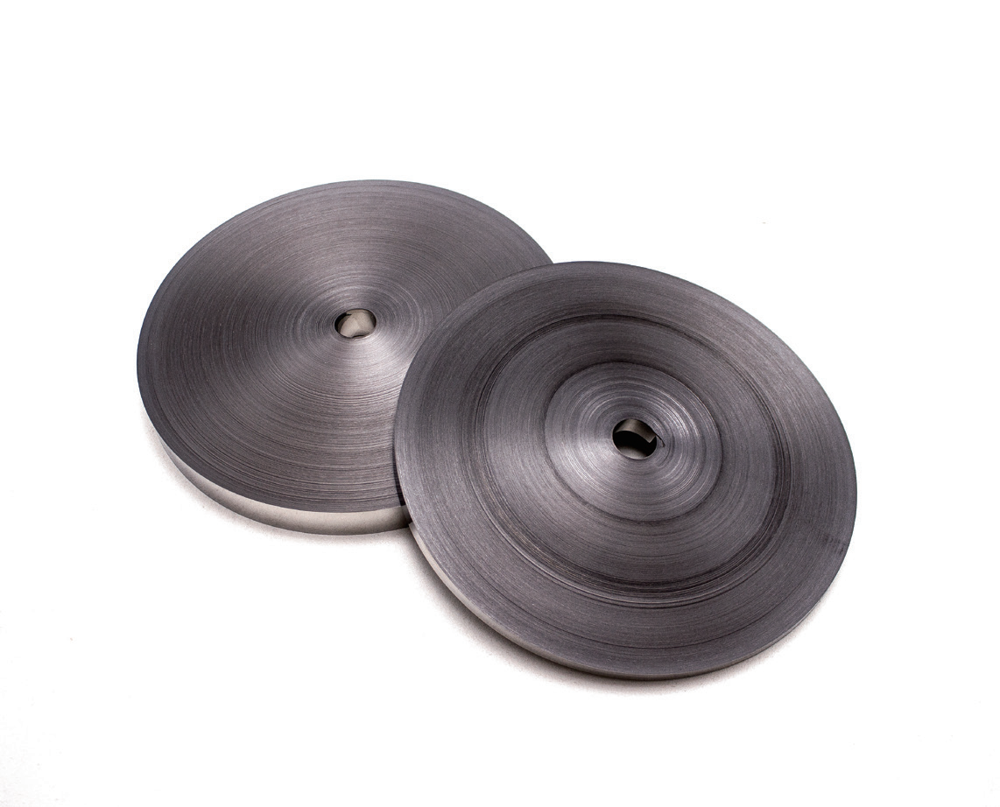

纳米晶带材

基本特性
| 材料牌号 |
居里温度 |
晶化温度 |
密度 |
电阻率 |
饱和磁通密度 |
饱和磁致伸缩系数 |
| 1K107系列 |
-570°C |
-530°C |
7.20 |
1.25 |
<1 |
<6 |
| 低牌号 |
-560°C |
-510°C |
7.20 |
1.25 |
1.10 |
1.30 |
纳米晶带材材料特性
| 名称 |
材料 |
相对初始磁导率 |
矫顽力 |
饱和磁导率 |
电阻率 |
| 铁基纳米晶合金 |
LM |
30000 - 60000 |
85 - 95 |
1.25 |
120 |
| FeCuNbSiB |
NM |
50000 - 100000 |
45 - 65 |
<1.5 |
120 |
| 铁基非晶合金 |
TM |
30000 - 150000 |
5 - 20 |
1.56 |
120 |
| FeSiB |
|
-5000 |
-85 |
<2.5 |
156 |
| 铁基单晶 |
|
>-50w.c. NbCo |
>90 |
0.5 - 0.9 |
140 |
| 工业纯铁 |
|
99.8Fe |
150 |
2.14 |
10 |
| 低碳钢 |
|
99.5Fe |
|
|
|
| 镍钢(无取向) |
|
35余Fe |
270 |
60 |
2.01 |
| 镍钢(取向) |
|
35余Fe |
1400 |
7 |
2.01 |
| J50 |
|
48%Ni余Fe |
1100 |
2 |
1.55 |
| J84 |
|
4Mo79Ni |
4000 |
1 |
0.8 |
| J85 |
|
5Mo80Ni |
8000 |
0.4 |
0.78 |
标准磁特性
| 名称 |
材料 |
相对初始磁导率 |
矫顽力 |
饱和磁导率 |
电阻率 |
| 铁基纳米晶合金 |
LM |
30000 - 60000 |
85 - 95 |
1.25 |
120 |
| FeCuNbSiB |
NM |
50000 - 100000 |
45 - 65 |
<1.5 |
120 |
| 铁基非晶合金 |
TM |
30000 - 150000 |
5 - 20 |
1.56 |
120 |
材料特性
- 高饱和磁感、高磁导率：铁基纳米晶合金同时具有高饱和磁感应强度(1.25T)和高的初始磁导率(>80000)，有利于减小体积，提高性能。
- 低损耗：相当于Fe基非晶合金的1/5，100kHz，300mT下损耗低至50W/kg，更低的损耗。
- 低矫顽力：静态50Hz下矫顽力低于0.5A/m以下。
- 低磁伸：接近于零的磁致伸缩系数，因而有极佳的噪音控制。
- 优良的温度稳定性：在-50°C~150°C温度范围内材料性能的变化率小于±10%。
- 优良的频率特性：在较宽频率范围内具有优良的磁导率特性及低的损耗。
- 磁性的可调节性：可通过不同热处理的温度、时间、气氛等获得不同类型的磁性，如软磁、硬磁等。
产品特点
- 节约能耗：满足高频低损耗的性能需求。
- 生产工艺流程短，一步成型：具备了铁基非晶合金的高饱和磁感应强度(Bs)和铁基纳米晶合金的高磁导率和低损耗。